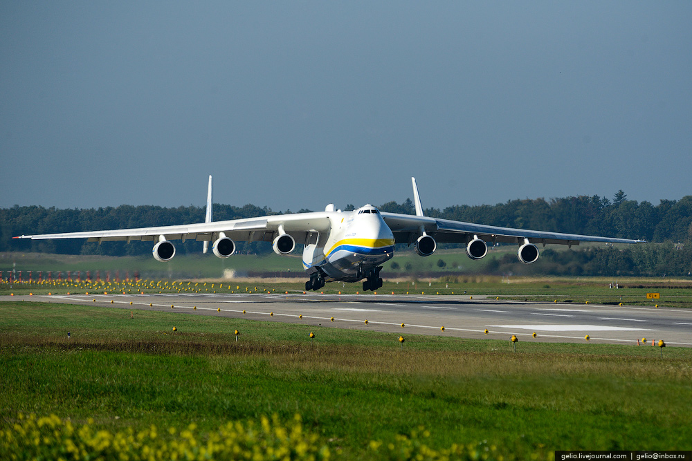
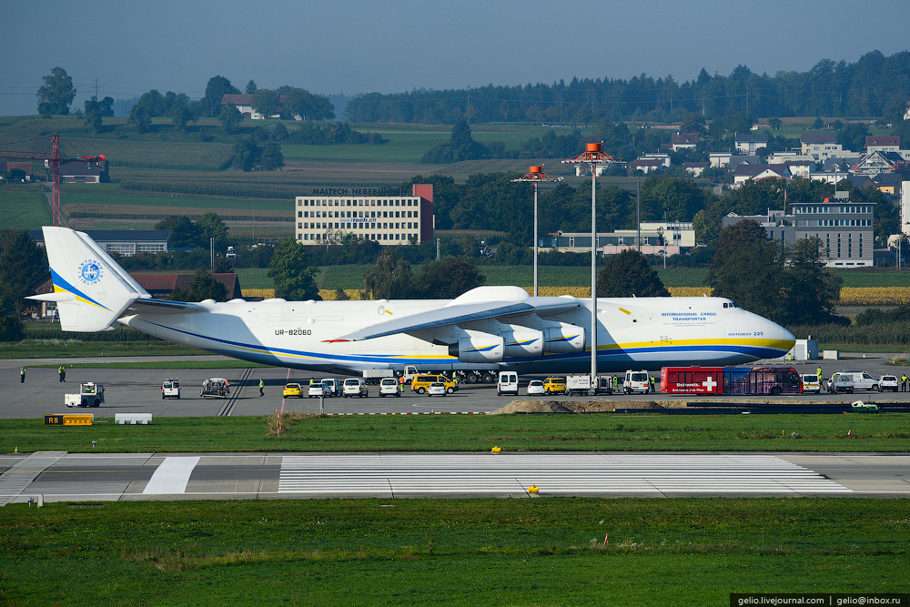

Ан-225 «Мрія» — найбільший та найпотужніший у світі транспортний літак, створений київським КБ імені Антонова.
Ан-225 з максимальною спорядженою масою 640 т є найважчим літаком у світі. Для порівняння, третій за вантажопідйомністю (після Ан-124) американський військово-транспортний літак C-5 Galaxy має максимальну споряджену масу 381 т.
Він настільки великий, що відстань, яку здолав при першому перельоті літак братів Райт, цілком може вміститись у вантажному відсіку «Мрії». Він також є найбільшим у світі літаком, що піднявся в повітря більше одного разу (хоча розмах його крила й менший, ніж в американського Hughes H-4 «Spruce Goose», котрий зробив лише один короткий низьковисотний випробувальний політ). Як Ан-124, так і Ан-225, більші за C-5 Galaxy, що є найбільшим літаком у США.
У листопаді 2004 Міжнародна федерація повітроплавання внесла Ан-225 у Книгу рекордів Гіннесса за його 240 рекордів.
29 травня 2016 року на держпідприємстві «Антонов» заявили про те, що розглядають можливість запуску серійного виробництва найбільшого в світі літака Ан-225 «Мрія».
Ан-225 було створено в першу чергу для потреб радянської космічної програми в частині транспортування вантажів, зокрема, космічних кораблів багаторазового використання «Буран» і компонентів ракетної системи «Енергія». Літак може перевозити й великогабаритні вантажі іншого призначення, які можуть розміщуватись як у фюзеляжі, так і «на спині». Мета створення Ан-225 була майже ідентичною меті створення американського Boeing 747SCA[en] — літака для транспортування космічних човників.